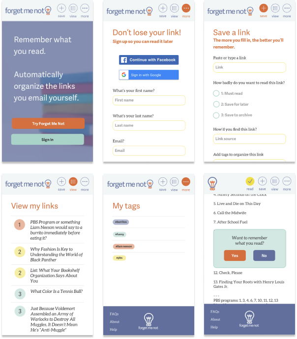
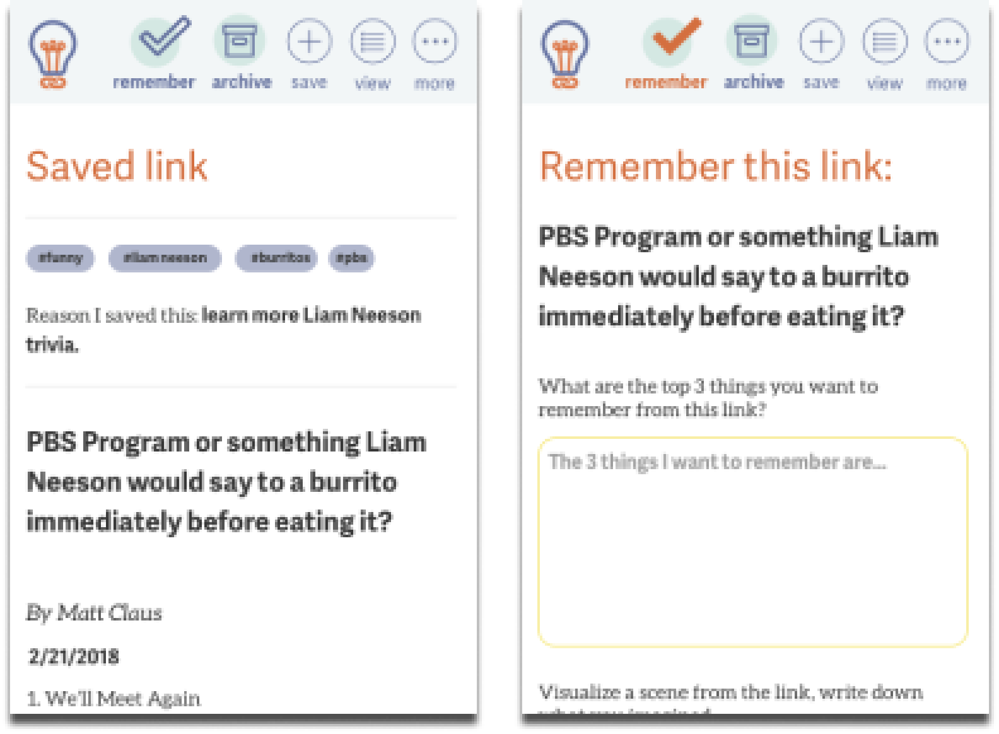

Forget Me Not is a responsive link saving website that helps users remember the information in the links they save. Forget Me Not makes information and learning more accessible by helping people learn more from what they already read.
My Role
I developed Forget Me Not as a side project over the course of several weeks.
I was responsible for all aspects of the research, design, and creation of an interactive prototype.
There are many tools for link saving, but no single leading platform. Why?
Core issue: All are link “graveyards”, like my pocket dashboard below . I don’t know what to read first.
Solution
Forget Me Not makes it easy for users to save and remember what’s in their links.
Forget Me Not is a tool optimized for reading and remembering links, not just saving them
Discover
SURVEY
I began with a survey to answer some questions I had:
How are people saving links?
What works?
What doesn’t?
What do they want to change about it?
I got:
55
responses
from
20+
U.S. Cities
To dig deeper, I looked at respondents who saved a lot of articles online. Their responses surprised me.
19%
of the Article Savers emailed links to themselves regualrly
100%
of the Article Savers who used a specialized link saving tool like pocket also emailed links to themselves
Email isn’t designed for link saving or reading, why was it so popular? What were all these tools missing?
PERSONAS
I made two personas to reflect my survey results:
Bobby
20 Busy college student working towards Bachelor’s Degree in Philadelphia
Bobby spends at least a couple hours on different social media sites every day. He saves lots of articles to read later because he never quite seems to have
the time to finish them. He also uses the web to find articles for class projects and research papers. Bobby uses pocket, email, and saves a lot of things on Facebook as well but doesn’t really have a system.
Regina
24 B.S. in Communications, young marketer living in NYC
Regina is a self-improver. She works hard at her job and she’s always saving links that help her work better, get healthier, and stay informed. She uses
Facebook Save, plus she emails herself tons of links everyday. She uses her different email accounts to keep track of all her links. She’s tried Flipboard and Pinterest but neither of them really stuck.
COMPETITIVE ANALYSIS
Strengths & Weaknesses:
Simple, easy ways to save links
Organize links through folders
No reminders to view unread links
None are designed to help you remember your link
Opportunities
Have a simple interface with just a few key features
Work across devices
Fit into users’ existing habits
Help them remember what and why they were saving
Define
USER STORIES
I focused on creating four core user stories from my research and personas:
“As a new or returning user, I want to save a link so that I can gather helpful and interesting content from around the web”
“As a new or returning user, I want to remember to read a link so that all my collecting isn't a waste”
“As a new or returning user, I want to get rid of old links I don't care about so that I don’t have an overwhelming number of old links”
“As a new or returning user, I want to remember what's in a link so that I get something out of what I save”
Before adding the more specific user stories, I researched reading retention techniques so that I could identify clear steps users could take to remember what they saved.
USER FLOWS
From my survey I wanted to avoid the mistakes of other link saving tools. I didn’t want to make users to learn new platform, instead I wanted to fit into what they were already doing (aka let them KEEP emailing links to themselves!)
My goal was to use the science of reading retention while keeping my platform simple and intuitive.
User flow for saving links through email:
Design
SKETCHES & WIREFRAMES
I began to sketch and test my initial ideas for an interface.
I created some initial wireframes, made an interactive prototype from them, and did 3 user tests to see if my interface was usable.
After seeking some feedback, I realized that I needed to get clear on what Forget Me Not would be: an app or website?
I realized that a responsive website would be the fastest way to see if there was a demand for a tool like Forget Me Not. I revised my wireframes to make this clear.
I also learned that categories were more important to users than I realized,
so I needed to add them and clarify the priority levels.
BRANDING
Several ideas came up over and over as I developed Forget Me Not:
Clarity · Forget Me Not is about bringing clarity to link saving and to what you remember from the links you save.
Simplicity · Forget Me Not is a simple and practical solution that doesn’t rely on complicated features or learning how to use another app.
Intuition · Forget Me Not is about simple, intuitive actions that help you get more out of the time you spend reading online.
Brightness· Forget Me Not helps people remember what they read so they can learn better and feel brighter.
I used these to develop a visual identity for Forget Me Not, beginning with mind maps and moodboards and ending with a full brand guide that included copy tone, color palette, logos, and typefaces.
HI-FI MOCKUPS
I revised my low-fi mockups to streamline the onboarding and saving and made my first hi-fi mockups.

Test & Refine
USABILITY TESTING
I did usability testing and more user testing to refine some of my key design decisions.
Which selected page view?
Which “read” button?
Which retention prompt?
From my testing, I realized I had several areas to improve:
The multi-colored tags were confusing
The email feature needed better explanation
The priority levels still needed to be clearer
The remember button had mixed results, but no clear winner. There had to be a simple, less obtrusive way to get users to do the remember sequence
REFINEMENTS
I refined the copy in the onboarding sequence and I made other visual tweaks to my mockups.
My biggest challenge was to make the “remember” feature more usable while not relying on an annoying popup, or buttons that only appeared at the end of the article.
After more brainstorming, I realized that I could add two buttons to the top menu. By making them clearly different from the navigation bar and pinning the menu to the top of the screen, users could tap “remember” or “archive” at the moment they
were finished with the link, even if they hadn’t scrolled to the bottom.

MORE TESTING
With two final user tests, I got the feedback for the final version of my prototype. I changed the label and priority colors and refined the copy in the onbaording and saving sequences.
Forget Me Not was now ready!
Deliver & Reflect
THE FINAL PRODUCT
evolution ADD GIF OF EVOLUTIONADD GIF OF prototype
REFLECTION
For the future:
I did not fully achieve my goal of making users automatically opt to do the retention sequence. They could do it easily, but only did it after I asked them how they’d remember what they just read.
I’d optimize the link view for photos and videos since this is big part of content saved on the web
I’d refine the onboarding and saving sequences
Lessons
You must create and test well-differentiated design solutions. In my usability testing I could have tried many other styles of “read” buttons and gotten more feedback to make my design more intuitive.
Your testers must match your research results demographically and psychographically. In my first round of testing, I had one tester who said they would never use the platform. When I asked why they explained that they just never
forgot to read links. This didn’t match my survey results or personas, so from then on I made sure to use testers who were like my future link-savers.